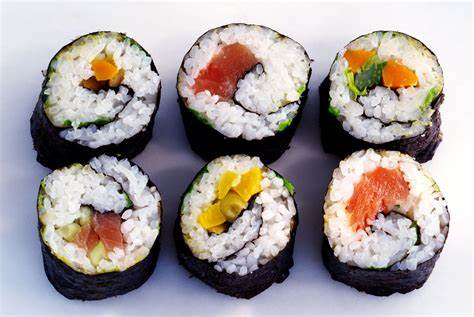
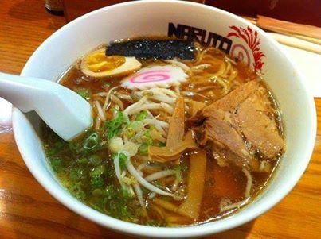
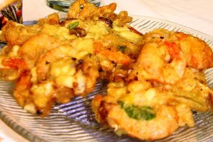

Tóquio
- População - 14.26 milhões
- Continente - Ásia
- Moeda - Yen
Oficialmente Metrópole de Tóquio é a capital do Japão e uma das 47 prefeituras do país. Situa-se em Honshu, a maior ilha do arquipélago. Em 2015, Tóquio possuía mais de 13,4 milhões de habitantes, cerca de 11% da população do país, e a Região Metropolitana de Tóquio possui mais de 37 milhões de habitantes, o que torna a aglomeração de Tóquio, independentemente de como se define, como a área urbana mais populosa do mundo. Um de seus monumentos mais famosos é a Torre de Tóquio. Foi fundada em 1457, com o nome de Edo ou Yedo. Tornou-se a capital do Império em 1868 com a atual designação.
Comidas Típicas 🍲

Sushi
O sushi é uma iguaria ancestral, tradicionalmente japonesa, que se estendeu à gastronomia contemporânea global. Originalmente ele se baseia na preservação do peixe no arroz mergulhado em molho de vinagre, açúcar e sal. Engana-se, porém, quem acredita que somente a carne do mar pode compor este prato, particularmente em sua modalidade crua.

Ramen
O ramen é um prato tradicional do leste asiático, que consiste em uma tigela de macarrão, um caldo (dashi) e ingredientes adicionais (chamados de toppings). Apesar de ter surgido na China, a receita só se tornou popular no Japão, durante a Segunda Guerra Mundial. Desde de então ela conquistou o mundo, incluindo o Brasil.
